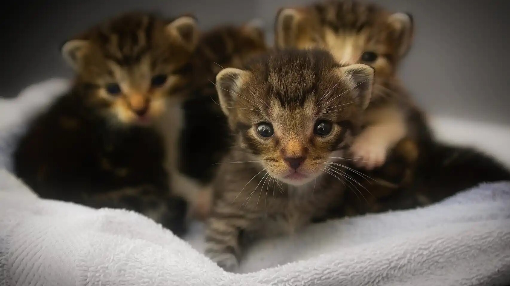
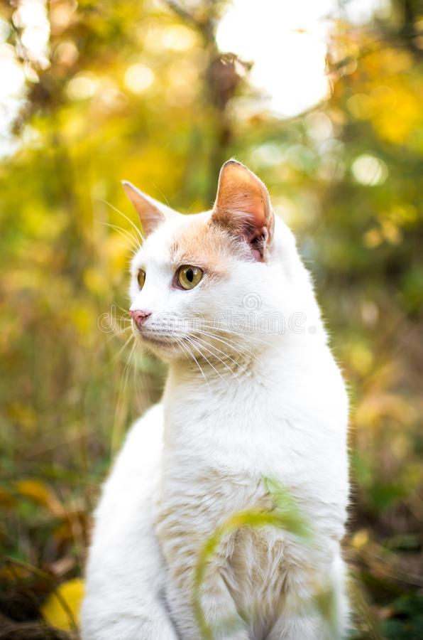

Aqui podrás encontrar a tu fiel compañero

Como adoptar
El proceso de adopción es bastante sencillo y con cero coste para usted, tan solo debera de venir con su identificación. En nuestras instalaciones podrá ver las mascotas que residen en ellas y elegir , o que le eliga a usted como compañero/a.
Y recuerde, una mascota no es un juguete
Una mascota es un compañero para toda su vida no un juguete a regalar y desechar. Ante cualquier indicio de abandono, por favor no dude en contactar para poder salvar la vida a un amigo/a peludo/a y poder tramitar la denuncia por abandono. Muchas gracias.